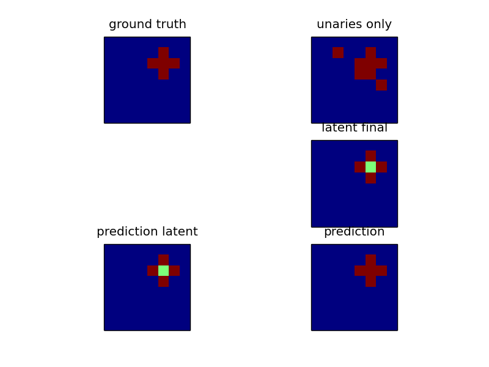

Solving a 2d grid problem by introducing latent variable interactions. The input data is the same as in plot_grid_crf, a cross pattern. But now, the center is not given an extra state. That makes the problem much harder to solve for a pairwise model. We can still solve it by introducing latent dynamics. In essence we allow an additional state with different interactions, that maps to the same state (the cross) in the ground truth.
Script output:
LATENT SVM ITERATION 0
Training 1-slack dual structural SVM
new constraint too weak.
new constraint too weak.
new constraint too weak.
new constraint too weak.
new constraint too weak.
no additional constraints
LATENT SVM ITERATION 1
no changes in latent variables of ground truth. stopping.
loss training set: 1.000000
loss test set: 0.995313
Python source code: plot_latent_crf.py
import numpy as np
import matplotlib.pyplot as plt
from sklearn.cross_validation import train_test_split
from pystruct.models import LatentGridCRF
from pystruct.learners import LatentSSVM, OneSlackSSVM
from pystruct.datasets import generate_crosses
X, Y = generate_crosses(n_samples=20, noise=5, n_crosses=1, total_size=8)
X_train, X_test, Y_train, Y_test = train_test_split(X, Y, test_size=.5)
crf = LatentGridCRF(n_states_per_label=[1, 2])
base_ssvm = OneSlackSSVM(model=crf, C=10., n_jobs=-1, inference_cache=20,
tol=.1)
clf = LatentSSVM(base_ssvm=base_ssvm)
clf.fit(X_train, Y_train)
print("loss training set: %f" % clf.score(X_train, Y_train))
print("loss test set: %f" % clf.score(X_test, Y_test))
Y_pred = clf.predict(X_test)
x, y, y_pred = X_test[1], Y_test[1], Y_pred[1]
fig, ax = plt.subplots(3, 2)
ax[0, 0].matshow(y, vmin=0, vmax=crf.n_labels - 1)
ax[0, 0].set_title("ground truth")
ax[0, 1].matshow(np.argmax(x, axis=-1),
vmin=0, vmax=crf.n_labels - 1)
ax[0, 1].set_title("unaries only")
ax[1, 0].set_visible(False)
ax[1, 1].matshow(crf.latent(x, y, clf.w),
vmin=0, vmax=crf.n_states - 1)
ax[1, 1].set_title("latent final")
ax[2, 0].matshow(crf.inference(x, clf.w),
vmin=0, vmax=crf.n_states - 1)
ax[2, 0].set_title("prediction latent")
ax[2, 1].matshow(y_pred,
vmin=0, vmax=crf.n_labels - 1)
ax[2, 1].set_title("prediction")
for a in ax.ravel():
a.set_xticks(())
a.set_yticks(())
plt.show()
Total running time of the example: 7.37 seconds